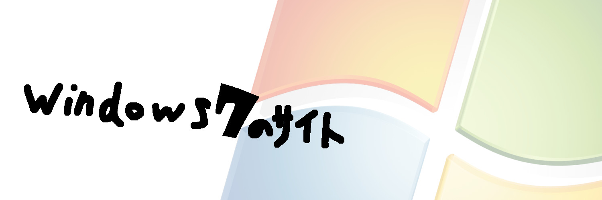

Windows7のウェブサイト
今回初めてHTMLでサイトを作ってみました。
阿部寛のホームページ程度には速いと思います。
(AndroidなどはBIZ UDPGothicを読み込ませているので、 初回時だとGoogle検索より遅いかもしれません。)
このサイトは不定期に更新していきます。
試験的にサイトのコードを変えることがあります。
よろしくお願いします！
Hello, world!
こんにちは、世界！

使用中のブラウザーは判定中...
ユーザーエージェント:
取得中...
BIZ UDPGothic(Google Fonts)
フリーフォントでかなり綺麗なので、かなりオススメです！
SIL Open Font License(OFL)